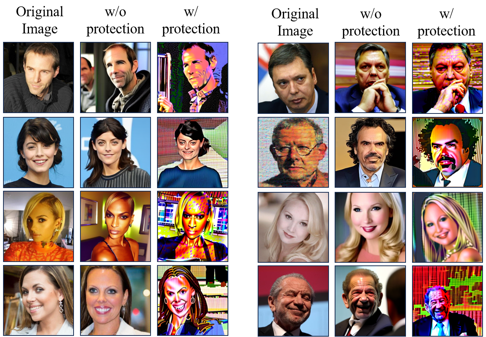
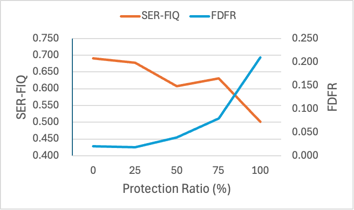
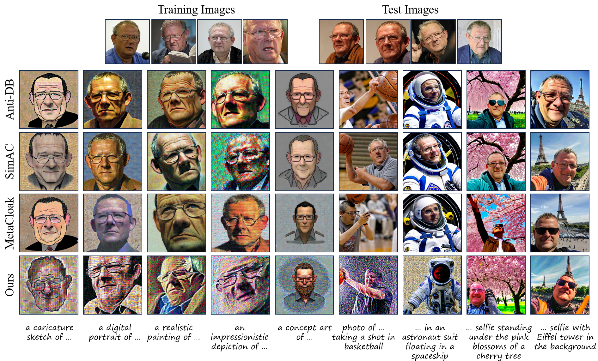

ID-Cloak: Crafting Identity-Specific Cloaks Against Personalized Text-to-Image Generation

Figure R1: Our protection's effectiveness against tuning-free personalization method (ip-adapter).

Figure R2: Results of ID-cloak with different protection ratios.

Figure R3: Qualitative comparison on more complex and diverse prompts.